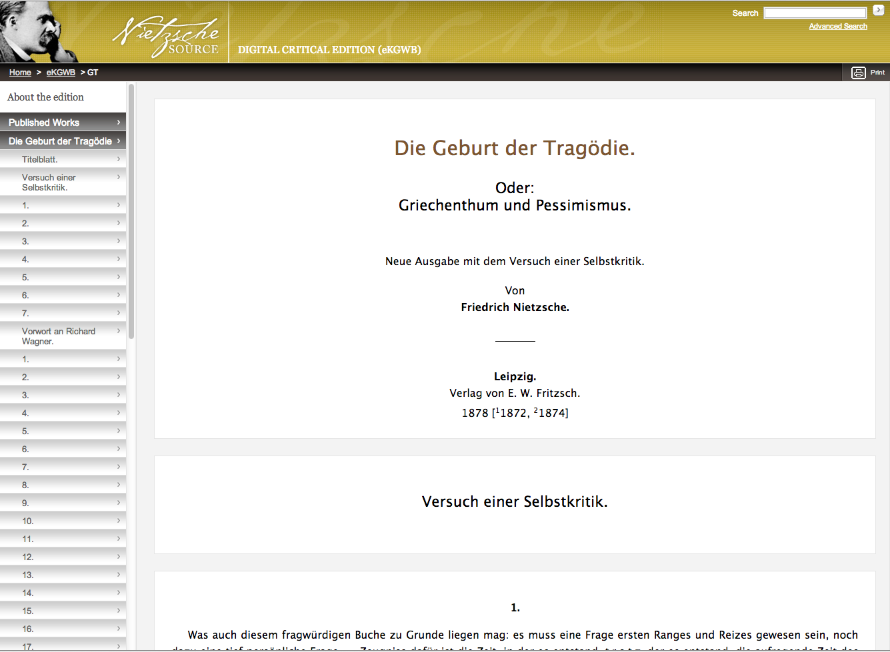
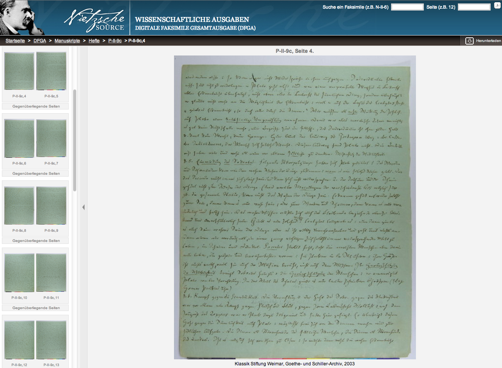
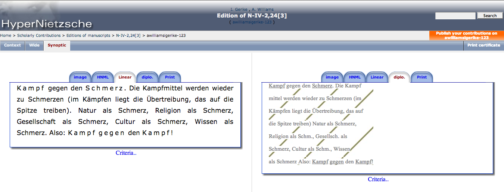
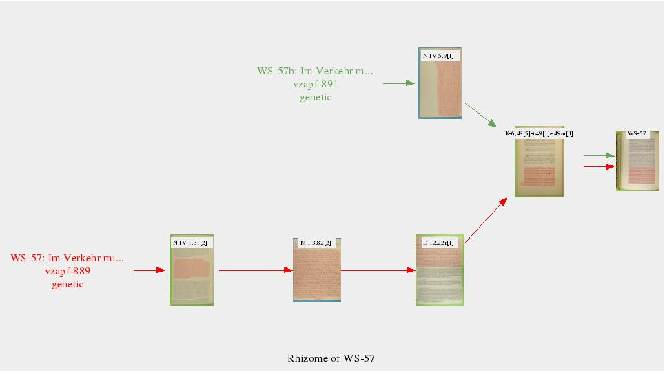
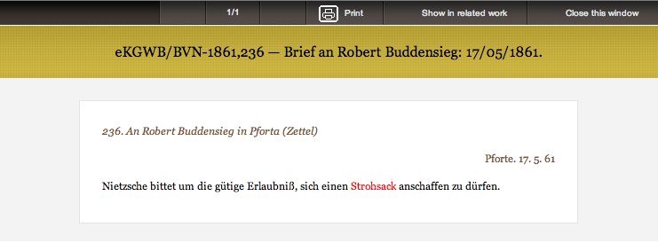

Nietzschesource
Table of Contents
Abstract
This review addresses the digital edition of Nietzsche’s works, Nietzschesource. The project presents a definite step ahead in the history of editions of the works of the 19th century philosopher and writer and offers the best text available to date. Moreover, it includes a growing archive of digital facsimiles of Nietzsche’s manuscripts and thus allows a wide base of scholars to suggest corrections and emendations of the established text. As a digital edition, however, it is in many respects disappointing, for it fails to make use of the great possibilities modern editorial techniques offer, for instance, the possibility to enrich texts with contextual material such as information on persons and places mentioned in the texts.
Nietzschesource describes itself as a ‘web site devoted to the publication of scholarly content on the work and life of Friedrich Nietzsche’. So far, two editions of Nietzsche’s work have been made available on Nietzschesource: the Digitale Kritische Gesamtausgabe Werke und Briefe (eKGWB) and the Digitale Faksimile Gesamtausgabe (DFGA) of the Nietzsche Estate. The eKGWB is based on the latest critical print edition of Nietzsche’s works, the Gesamtausgabe edited by Giorgio Colli and Mazzino Montinari (Colli-Montinari) and follows both the text as well as the categorisation of Nietzsche’s writings established by that edition, which are the following:
- Published works (18 volumes in the eKGWB)
- Private publication (3 volumes)
- Authorised manuscripts (3 documents)
- Posthumous writings (8 documents)
- Posthumous fragments
- Letters (covering 38 years)
The DFGA is an independent contribution of Nietzschesource, at the moment comprising 9000 digitised pages and aiming at providing high-resolution colour-scans of the entire contents of the Nietzsche estate. The scholarly team behind Nietzschesource consists of a group of ten people headed by Paolo D’Iorio; the website is currently managed by the Association HyperNietzsche, a non-profit organisation hosted at the École normale supérieure in Paris.
Nietzschesource is not the first attempt to produce a digital edition of Nietzsche’s works and, as we will see, it falls behind some of the achievements of these earlier attempts. In the world of digital editions, Nietzsche has had a relatively long history, starting with a CD-ROM version by Malcolm Brown published by de Gruyter in 1994 (Brown). Since then there has been the HyperNietzsche project (D'Iorio 2001), whose website first appeared online in 2001, and now Nietzschesource. HyperNietzsche and Nietzschesource, both being directed by D’Iorio and managed by the Association HyperNietzsche, are two closely connected projects. Furthermore, navigating to http://www.hypernietzsche.org will redirect you immediately to Nietzschesource, and hence it appears that Nietzschesource is supposed to be the successor of HyperNietzsche and a further development. At the same time, much of the content of HyperNietzsche is still available if one uses a search engine to bypass the start-page. A good entry point is http://www.hypernietzsche.org/surf_page.php?type=scholarly. The relation of HyperNietzsche and Nietzschesource is a very interesting issue from a number of viewpoints, but a detailed comparison of the two projects is beyond the scope of this review. I will, however, refer to HyperNietzsche at some points of my criticism of Nietzschesource and it will emerge that, at least in some aspects, HyperNietzsche has to be considered to be superior to its successor project.

Browsing the contents the eKGWB is straight-forwarded and can hardly be improved. After selecting a work from the left navigation pane, the entire text is loaded into the central reading area while the navigation pane unfolds into a chapter-browser. This is convenient, for it allows the readers to avail themselves of the inbuilt search-function of his browser. Reading longer parts of the text from the screen can prove somewhat exhausting, due to line-spacing, the choice of font and the fact that the length of the lines is determined by the browser window, which, on modern big screen results in very long lines. However, this is a minor point and thanks to the incorporation of numerous corrections on the text of the Gesamtausgabe, the eKGWB can pride itself of being the most up-to-date edition of Nietzsche’s works available. All these features should make Nietzschesource the first stop for students of Nietzsche’s work and a great contribution to Nietzsche scholarschip.
Nietzschesource developed a reference system that allows referring to works, chapters, aphorisms or fragments with human-readable, fixed and therefore citable internet-addresses. For instance, section 18 of the prelude of the Gay Science, ‘Schmale Seelen’, can be referred to with the URL http://www.nietzschesource.org/#eKGWB/FW-Vorspiel-18. At the moment, to obtain such a reference-URL, the reader has to select the relevant section from the navigation pane and then copy the URL from the browser address bar; it would be more convenient to also have appropriate citation information in every referable section in the main reading area.
The DFGA offers high-res colour facsimiles of several of Nietzsche’s writings, but a quick view of the current contents makes it evident that some work still has to be done. At the moment, the reader will find facsimiles of some published works, as well as proof sheets, manuscripts for printing, loose sheets, notebooks and notepads, but the digitising of such an enormous corpus evidently takes a long time and hence a lot is still unavailable. Studying the facsimiles is facilitated through an image-viewing app that allows not only to zoom in and out, but also to rotate the image and modify contrast, brightness, hue and saturation, features that certainly will be appreciated by those trying to decipher Nietzsche’s handwriting, which, especially when it comes to his notebooks, can be a tricky business.



I would like to add a note on the phenomenon of letter-spacing. In the eKGWB, letter-spacing is frequently used both in texts belonging to the category of printed works, as well as in handwritten material such as the letters. If we compare passages of the printed works featuring this phenomenon with their respective manuscripts, we find that Nietzsche, writing by hand, did not space the letters, but underlined them. Thus, his underlining was meant to tell the printer to emphasize the respective words and probably can also be interpreted as an expression of his wish that these words should be letter-spaced assuming, as is plausible, that Nietzsche knew that the printers would make use of this kind of emphasis. The eKGWB edition of the letters also feature letter-spacing and we can assume (since there are no facsimiles of the letters yet, I was unable to confirm this assumption) that the manuscripts of the letters also underline the words that the eKGWB represents as letter-spaced.
Hence, one could say that the eKGWB is consistent in representing
underlining with letter-spacing. However, there is a difference. For while in the case
of manuscripts that were meant to be published Nietzsche used underlining as an
indication for the printers to emphasize the respective words and in all probability
knew that the printers would not use underlining but letter-spacing to realize this
indication, this is not the case for the letters. This brings up the question how an
editor should deal with textual phenomena such as underlining. The editors of
Nietzschesoure have chosen to represent the semantics of the phenomenon: underlining in
the case of the published works as well as in the case of the letters was (probably
correctly) interpreted as emphasis and this semantic value is, in the edition,
represented with letter-spacing. Alternatively, an editor can choose to preserve the
textual phenomenon and mark the respective words as underlined. They can then, in a
further step, add an interpretation of this phenomenon and decide that underlining has
the semantic value of emphasis. The latter method has the advantage of greater
flexibility: for the reading texts of the published works it might make sense to use
letter-spacing for words marked as underlined in order to stay close to the printed
works, which, since Nietzsche saw and approved of them, count as autographs. But for the
letters, it might be better to represent underlined words by underlining them. In both
cases, given appropriate documentation, the process is transparent to reader and hence
open to criticism. This consideration is not meant as criticism of Nietzschesource, for
such a criticism would be nit-picking. Also, it is possible that the editors indeed went
half the way of the second method: according to their introduction the texts are encoded
using TEI and the normal way to encode underlining in TEI would be <emph
rend="underlined">; I cannot confirm that this mark-up has been used
because the TEI files are not publically available, but even if this was the case,
Nietzschesource makes no use of the separation between textual phenomenon and semantic
interpretation by just printing letter-spaced without providing the reader with
information regarding the underlying textual phenomenon.
But at the end of the day, if the eKGWB is consistent in always representing underlining with letter-spacing, nothing is lost to the reader and that is all that counts. But I think the consideration shows an important (possible and desirable) feature of digital scholarly editions, namely to preserve and present textual phenomena and keep them and the editor’s interpretation of them apart (a striking example is the use of underlining in medieval manuscripts: words were underlined for a number of reasons including deletion, indication of proper names and quotes, just to mention a few. Clearly, keeping the textual phenomenon and its interpretation apart is instrumental when editing such a text.)
This brings us, thirdly, to the important question of documentation. As the case of the letter-spacing shows, the readers are forced to speculate about the textual evidence (or, if available, they have to check the facsimiles themselves), even in case of existing mark-up because no explanation regarding these issues is provided within Nietzschesource (another example is the occurrence of ‘[+ + +]’ in the letters). The same is true for information regarding the technical background of Nietzschesource. We learn from the four-paragraph introduction to the eKGWB that TEI was used to encode the data, but nothing else is revealed (the XML files themselves are not accessible). All in all, ‘minimalistic’ would certainly be a euphemism as far Nietzschesource’s technical and editorial documentation is concerned. In fact, it is a basic editorial duty to make transparent to the reader all symbols used to indicate editorial action, but even after browsing Nietzschesource for hours I could not obtain these information.

Since it is evident that this sort of additional information can be extremely helpful, it should, if at all possible, always be provided in a digital edition. But there are even more basic kinds of metadata, and it seems that Nietzschesource is not providing them, either. A striking example is the Idyllen aus Messina. Opening this work from the list of published works in the eKGWB will give you only the title itself and then immediately the first piece, ‘Prinz Vogelfrei’. But we are not told – at least in the eKGWB, while the DFGA, remarkably, contains this data – that this work was published in the fifth issue of Ernst Schmeitzner’s Internationale Monatsschrift. Zeitschrift für allgemeine und nationale Kultur und deren Litteratur or any other relevant information regarding its publication. Nietzsche scholarship has put in an effort to provide these information (Schaberg 1995) and an extract of such findings or at least a reference to it would be of great value to any reader. Again, had work titles been indexed it would have been possible to provide the readers with links to documents relevant for the publication of the Idyllen, as e.g. Nietzsche’s letter to the editor of the Monatsschrift, Schmeitzner (cf. http://www.nietzschesource.org/#eKGWB/BVN-1882,227). One could object that the case of the Idyllen is a rather exceptional example and that basic information like the place of publication is available for all or most of the other works. However, the real problem is that they are not available as formal metadata, but only as text on the cover-pages of the individual works. This is another example of missing mark-up and results in the impossibility, just to give one example, of automatically creating registers that include the different publishing houses and editors Nietzsche published his works with.
To sum up, Nietzschesource will certainly be welcomed by scholars working on Nietzsche or related subjects: it is a free of charge, publically available edition of all of his works offering the best text available to date, thanks to the incorporation of the errata; a large number of facsimiles can be studied and the search engine can be put to great use. Apart from that, and in view of the criticism advanced above, I conclude that Nietschesource is rather a digitised critical edition than a true digital scholarly edition (Sahle 1:148-155). There are, despite D’Iorio’s claim that Nietzschesourve ‘is not a “digital photocopy” of the Gesamtausgabe’ (D’Iorio 2010), only very few features that could not have been accomplished by a printed edition, and some features that a good printed edition surely would have provided, are missing. Compared to other digital editions projects, like for instance the Diaries of Robert (Graves-Petter-Roberts 2003), the Correspondence of Carl Maria von Weber (Allroggen et al. 2013), the Correspondence of Alfred Escher (Jung 2012), or the Diary of William Godwin (Myers-O'Shaughnessy-Philip 2010). Nietzschesource has not availed itself of the possibilities that would allow it to meet expectations generally held for digital scholarly editions nowadays. Without access to the XML files or a sufficiently detailed technical documentation, it is unclear to me that it would be possible to implement the following suggestions, but I feel these would immeasurably enhance the existing project: first and most importantly, establishing links between eKGWB and DFGA; secondly, incorporating a layer-model including a diplomatic view; and thirdly, enriching the texts with metadata. Moreover, making the XML files publically available would allow specialists to systematically analyse the corpus as well as make sure that the work the Nietzschesource-team has put into the creation of a TEI-version of Nietzsche’s texts can function as the basis for a future development.
Given this evaluation of Nietzschesource, the question of its relation to HyperNietzsche is raised once again, especially since D’Iorio has been involved in HyperNietzsche as well. Most of my criticism would have been inapplicable to HyperNietzsche, and we have to wonder why, even if it had proved impossible to carry through the extremely ambitious task HyperNietzsche set for itself, Nietzschesource is significantly below its precursor in terms of methodological aims and design. One could suspect that this is due to the integration of Nietzschesource into the community of other *-source projects, like Wittgensteinsource, or ModernPhilosophiesource (see http://www.discovery-project.eu/philosource.html), foisting the Nietzsche-project into a generic framework that cannot accommodate for many features, the lack of which has been criticised above. However, one would expect that something as basic as the mark-up of persons and works should be available in any framework designed to host a great variety of philosophical writers. At any rate, it seems that the different *-source projects really are pretty independent of each other and that Wittgensteinsource, for instance, offers a very neat configurable synoptic viewer including diplomatic transcriptions, just to name one feature (http://tinyurl.com/cbd8nga).
To conclude, Nietzschesource is a great resource for students and scholars of Nietzsche. It offers the best text available to date and is free of cost. It already provides many facsimiles that will allow researchers to challenge the existing editions and hopefully this collection will grow over time. As a digital edition, though, it is, at least in its current state, a disappointment, for the reasons outlined above. The author of this review hopes that the future will allow the team around Nietzschesource to pick up some of the ambitious and fascinating ideas that made HyperNietzsche such an interesting project.
Bibliography
- Allroggen, Gerhard et al., eds. Correspondence of Carl Maria von Weber. Mainz: Akademie der Wissenschaften und der Literatur, 2013. Accessed: 09.04.2014. http://www.weber-gesamtausgabe.de.
- Brown, Malcom. Nietzsche, Kritische Gesamtausgabe Werke. Berlin and New York: Walter de Gruyter, 1990. CD-ROM.
- Colli, Giorgio, and Mazzino Montinari, eds. Nietzsche, Friedrich. Werke. Kritische Gesamtausgabe. Berlin and New York: Walter de Gruyter, 1967–.
- D’Iorio, Paolo et al., eds. HyperNietzsche. Paris: Association HyperNietzsche, École normale supérieure, 2001. Accessed: 09.04.2014. http://www.hypernietzsche.org/surf_page.php?type=scholarly.
- D’Iorio, Paolo et al., eds. Nietzschesource. Paris: Association HyperNietzsche, École normale supérieure 2009. Accessed: 09.04.2014. http://www.nietzschesource.org.
- D’Iorio, Paolo. “The Digital Critical Edition of the Works and Letters of Nietzsche.” The Journal of Nietzsche Studies 40 (2010): 70-80.
- Graves, Beryl, Christopher Gordon Petter and L. Roberts. Diary of Robert Graves 1935-39 and ancillary material. Victoria, B.C.: University of Victoria Libraries, 2002. Accessed: 09.04.2014. http://graves.uvic.ca/graves/site/index.xml.
- Jung, Joseph, ed. Digitale Briefedition Alfred Escher. Zürich: Alfred Escher-Stiftung, 2012. Accessed: 09.04.2014. http://www.briefedition.alfred-escher.ch.
- Myers, Victoria, David O'Shaughnessy, and Mark Philp. The Diary of William Godwin, eds. Oxford: Oxford Digital Library, 2010. Accessed: 09.04.2014. http://godwindiary.bodleian.ox.ac.uk.
- Sahle, Patrick. Digitale Editionsformen. 3 vols. Norderstedt: BoD, 2013.
- Schaberg, William. The Nietzsche Canon: A Publication History and Bibliography. Chicago: University of Chicago Press, 1995.
@article{nietzschesource,
author = {Steinkrüger, Philipp},
title = {Nietzschesource},
journal = {RIDE – A review journal for digital editions and resources},
number = {1},
year = {2014},
doi = {10.18716/ride.a.1.4},
url = {https://doi.org/10.18716/ride.a.1.4},
}TY - JOUR
AU - Steinkrüger, Philipp
TI - Nietzschesource
T2 - RIDE – A review journal for digital editions and resources
IS - 1
PY - 2014
DA - 2014/06
DO - 10.18716/ride.a.1.4
UR - https://doi.org/10.18716/ride.a.1.4
PB - Institut für Dokumentologie und Editorik e.V.
LA - en
ER - Steinkrüger, P. (2014). Nietzschesource. RIDE – A review journal for digital editions and resources, (1). https://doi.org/10.18716/ride.a.1.4Steinkrüger, Philipp. "Nietzschesource." RIDE – A review journal for digital editions and resources, no. 1, 2014. https://doi.org/10.18716/ride.a.1.4.Steinkrüger, Philipp. "Nietzschesource." RIDE – A review journal for digital editions and resources, no. 1 (2014). https://doi.org/10.18716/ride.a.1.4.